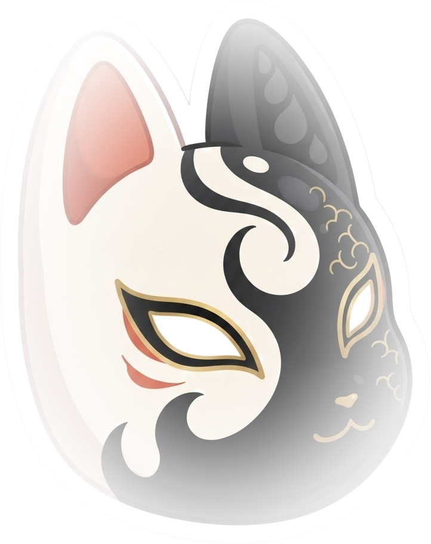
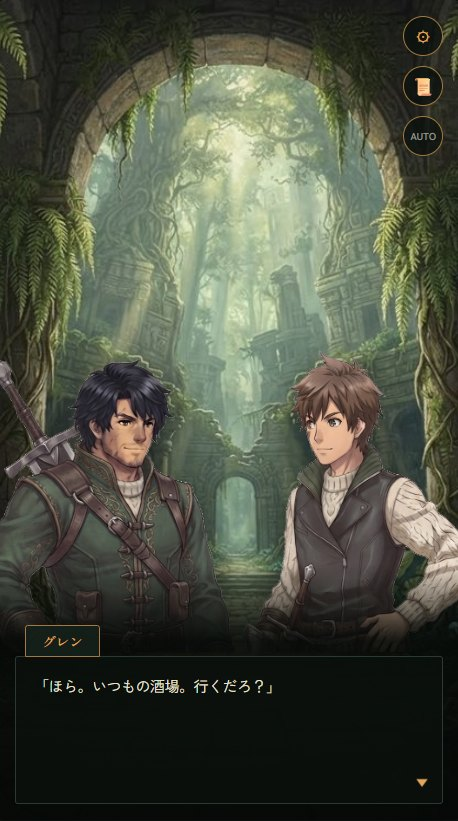
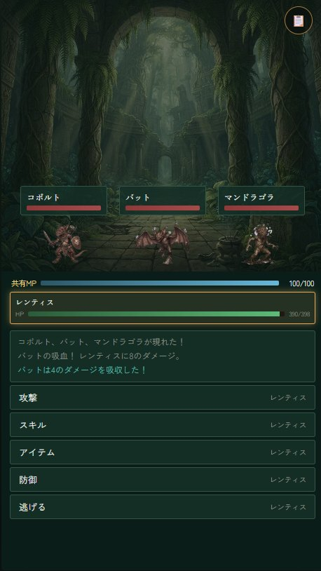

世界樹のふもとにある街・アルヴェリア。その内部に広がる古代遺跡には「ウィルス」と呼ばれる魔物が棲みつき、腕に覚えのある探索者たちが日々その階層に挑んでいます。
主人公も、そうした探索者のひとり。頼れる仲間たちと遺跡の奥へ進むうちに、世界樹とウィルス、そして遠い昔に語られた「楽園」の伝承が、少しずつ繋がっていきます。
会話パートで描かれる、仲間たちとの掛け合いと世界樹の謎。章ごとに区切られた物語を、門番との戦いを節目に進めていきます。
世界樹の各階層は、分かれ道や宝箱、痕跡が点在するマップ。限られた行動力をやりくりしながら、奥へ奥へと足を運びます。
パーティで共有するMPを分け合いながら、スキルとアイテムを使い分けるコマンドバトル。門番戦には、戦いの最中に物語が動く演出も。
物語、街、探索、バトル。冒険のいくつかの場面です。




物語の入口として、序盤でわかることを少しだけ。
雲の上まで伸びる巨大な樹。その幹の内側には、いつ誰が築いたとも知れない遺跡が階層状に広がっています。十の階層ごとに、先へ進む者を試す「門番」が待つといわれています。
遺跡に棲む魔物たち。多くはただ縄張りを守っているだけで、自ら人を襲うことはあまりありません。なかには、人の言葉を解するほどの知性を持つものもいるようです。
探索者たちの拠点となる、世界樹のふもとの街。ギルドで依頼を受け、武具や薬を整え、酒場で噂話を拾う。自宅では、主人公の妹・ミナが帰りを待っています。
フリーゲーム夢現のページから、そのままブラウザで遊べます。ダウンロードやインストールは必要ありません。
フリーゲーム夢現にて公開しました。